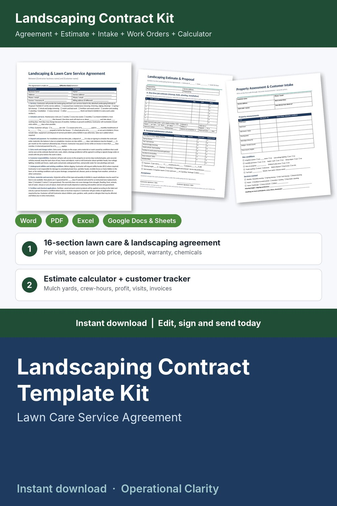

Landscaping Contract Template Kit

Price the job, sign the contract and keep every lawn on schedule: a complete landscaping and lawn care contract kit with a working estimate calculator and customer tracker, not just a Word file.
WHAT'S INSIDE
- Landscaping & Lawn Care Service Agreement (Word + PDF): 16 plain-English sections, 2 pages. Services, schedule and season, per-visit / season / installment / fixed job price, deposit and payment, late fee, extra work and change orders, customer responsibilities (access, pets, sprinklers, invisible fences), 811 utility locates and existing conditions, plants and warranty, fertilizer and chemical applications, property damage, weather, insurance, cancellation and renewal, photos, limitation of liability, signatures.
- Landscaping Estimate & Proposal (Word + PDF, Exhibit A): one-time job estimate with materials in cubic yards, deposit and balance, plus a seasonal maintenance schedule (mowing, cleanups, trimming, mulch, fertilizer, aeration, snow) with payment options.
- Property Assessment & Customer Intake (Word + PDF): lawn and bed measurements, site conditions, services wanted, preferences and a full-page site sketch.
- Work Order & Crew Checklist, Change Order, and Job Completion & Walk-Through sign-off (Word + PDF).
- Landscaping Estimate Calculator & Customer Tracker (Excel / Google Sheets, 9 tabs):
* Job Estimate: mulch, soil and stone calculator (sq ft x depth = cubic yards to order, with waste), tasks by crew size and hours, materials markup, proposed price, deposit, and your real costs, profit % and revenue per crew-hour
* Season Pricer: lawn size gives a per-visit mowing price; add cleanups, aeration, fertilizer and trimming for a season price, monthly installment and prepay price
* Settings: your crew rate, labor and equipment cost, overhead and target profit, with a minimum crew rate check
* Customers: frequency, per visit / monthly plan / per job billing, contract dates, revenue, gross profit per property and alerts (UNSIGNED / RENEW SOON / CONTRACT ENDED / VISIT OVERDUE / PAYMENT OVERDUE / UNBILLED)
* Visit Log with crew-hours and direct cost; Invoices with due dates, late fees and PAID / OPEN / OVERDUE status
* Printable Invoice: pick a customer and dates, billable visits fill in by service
* Dashboard: invoiced, collected, overdue, unbilled work, monthly recurring revenue, revenue per crew-hour, gross margin, renewals, month-by-month chart
- START HERE guide (PDF)
HOW IT WORKS
1. Set your crew rate and costs on Settings.
2. Walk the property with the Property Assessment form.
3. Price one-time work in the Job Estimate and maintenance in the Season Pricer; copy the numbers into the Estimate & Proposal.
4. When the customer says yes, fill in the Agreement, sign and invoice the deposit.
5. Log visits, use Work Orders and Change Orders on site, bill unbilled visits and watch the alerts.
Example data (9 sample customers) shows how it all connects; delete it and type your own. Yellow cells = type here, green cells = calculated.
FORMATS
- Word .docx (edit in Microsoft Word, Google Docs, Pages or LibreOffice) + PDF, US Letter
- Excel .xlsx (works in Excel and Google Sheets)
This is an instant digital download, no physical item will be shipped.
Editable template, not legal advice. Laws differ by state and country; have it reviewed by a local attorney before you use it. Check your state's rules for pesticide and fertilizer licensing and sales tax.